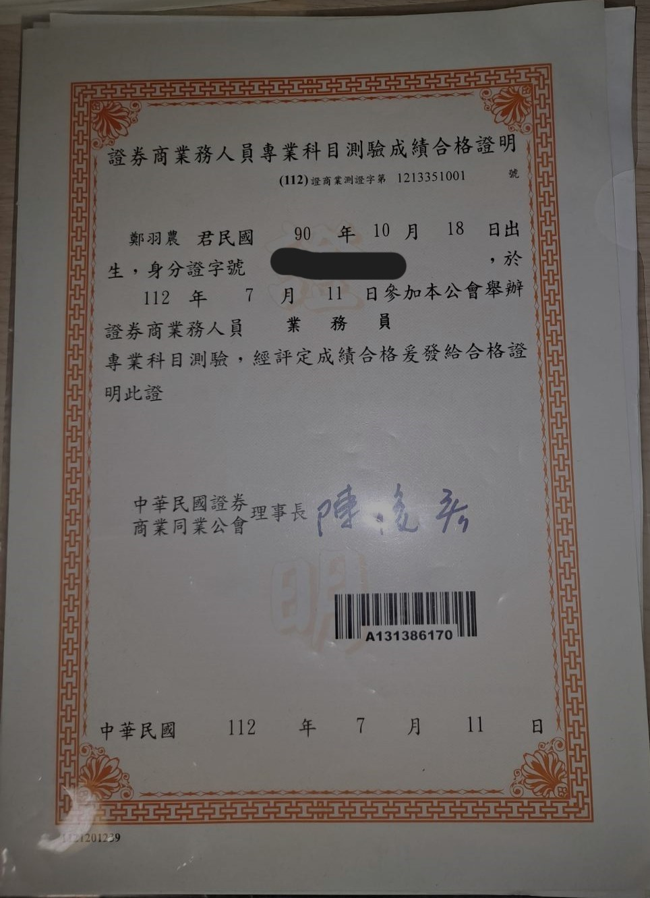

關於我
經濟學培養我用不同角度觀察社會和用經濟思維做決策、資訊工程學則培養我分析數據並具體實踐目標的能力。
雙主修學歷證明 成績優異證明 金融證照證明

個人簡介和申請動機
- 透過學習了兩個不同領域的學科，不僅讓我跳脫舒適圈，也磨練了我的思維靈活度與學習能力。透過長期自律和專注，我能夠在學業上保持良好成績，
並在專題製作中發揮團隊合作與溝通的能力，成功將所學知識應用於實際情境中。我熱衷於自主學習，持續吸收新知識，並不斷精進自己的專業技能。
- 我秉持「Fail Fast, Succeed Faster」的信念，面對挑戰時我會迅速採取行動， 並透過實踐來不斷優化解決方案。這種方法使我能夠快速發現問題、修正錯誤，並提升解決問題的速度和效率。 這也是我面對困難和壓力時的核心策略，讓我在快速變化的環境中能夠持續前進並不斷成長。
-
我曾經看過藥師學姊的畢業心得，對於未來生活的想像，
我希望不僅僅是每天在科技業辛苦工作，而是能夠實現一個良好的work life balance。自從第三屆的時候，
我就一直關注這個 bootcamp(價格也一直在調漲......)，但由於當時沒有多餘的時間參加，因此無法參與。然而，這次我下學期將結束學業，
將有足夠的時間全心投入學習。面對畢業季，在尋找工作的過程中，我發現自己的專業能力仍有很大的提升空間。
我渴望能夠獨立完成一個完整的專案，
我希望我能夠在這個訓練計畫中學到更多的技術，並且將這些技術應用到實際的專案中，因此，我決定參加這個訓練計畫。
- 另一個原因就是透過系統化的訓練，我可以用最短的時間培養我的專業能力 自學雖然也可以達到我的目標，但考量時間成本，我認為參與bootcamp是最有效率及最能最大化目標的方式。
-
結論: 經濟學教導我們要最大化目標，考量機會成本做出決策，時間是我的成本，所以我決定最小化我的時間去達到學習程式的目標。
那如果是用賽局的方式考量呢? 以參加bootcamp對將來就業競爭力的影響為例，我參加和不參加的結果如下:
答案忽之欲出，我選擇參加對我帶來的好處是更多的，學到技術的同時還能和學員組隊製作專案和個人專案，這是最吸引我的部分。決策表格
是否參加bootcamp 我參加 我不參加 他參加 實力相當 我輸了 他不參加 我贏了 兩個都輸了
軟體工程相關學習與作品
以下是我曾完成的作品與技術應用：
-
股價預測與投資組合管理網站：這是一個多元股票投資組合平台，利用深度學習和時序模型進行股價預測，並提供風險評估與投資建議。在該專案中，我負責預測模型構建及爬蟲財報。
點擊展示影片 -
Kaggle 競賽：我在 Kaggle 上參加了數據分析競賽，從中學會了如何處理大規模數據，並運用機器學習技術進行預測分析。
點擊連結到我的 Kaggle -
2D射擊遊戲 (JavaScript 開發)：這是一款使用 JavaScript 開發的 2D 縱向卷軸射擊遊戲，讓玩家體驗簡單的遊戲機制，同時增進了我的網頁開發技術。
點擊遊玩遊戲 -
CAPM投資組合分析報告：這是一個進行回測的投資組合分析報告，利用CAPM模型進行風險評估與投資建議。
點擊觀看投資報告分析 -
東華車友即時LINE BOT (已停止運行)：這是一個爬取FB貼文並且自動傳訊息到LINE BOT提醒的爬蟲專案。
點擊展示專案照片
參與訓練的學習時間安排
我會全職投入這個訓練，因為我已經完成了學校的課程，不再需要花費時間於其他學業。我將制定每日學習計劃，確保每天至少花 6-8 小時進行技術學習與實踐。
選擇投入領域的理由
我對後端、資料分析、深度學習特別感興趣，在大數據的時代，企業如何分析活用手上的數據是很重要的， 我認為LLM的企業應用也是將來的趨勢之一。 不論是後端工程師還是資料科學家要會的深度學習，都是我想要學習的內容， 因為我認為這些技術在未來的發展中將會有很大的應用價值。 我再找實習工作的時候 ，有看見牙醫診所應用影像辨識的工程師徵求， 也有看見要精通python且也要會web開發並應用在AI專案上的工作， 我的目標就是要成為能活用深度學習技術結合前後端的能力開發出系統專案，因此我希望能夠透過這個訓練計畫達到我的目的。
處理負面情緒的經歷
目前最讓我有印象的是一開始學習程式語言
是在一開始接觸C和C++時，這是我程式設計之路的起點。學校每週都會布置各種程式題目，
這讓我深刻體會到“從入門到放棄”的真實感受。當時還沒有像GPT這樣的輔助工具，常常一題需要花費一整天才能解出來。
由於我當時沒有資工系的同學可以請教，只能依靠網路資源和Stack Overflow上的討論自行摸索。
在這段學習過程中，遇到寫不出程式的挫折確實讓人感到沮喪，
但同時也讓我學會了獨立思考和解決問題的能力。儘管實驗課的最終成績只拿到C-，
但這段艱難的過程為我打下了堅實的基礎。當我之後自學其他語言時，能更快速地理解語言的結構與邏輯，
這也讓我明白，面對挑戰時的堅持和學習過程中的收穫，遠比結果更加寶貴。
其實對於失敗，我是有一定的接受度的，因為我知道失敗是成功的一部分，我會從失敗中學習，
並且不斷嘗試，直到成功為止，當然有時候還是要懂的止損，認清自己的優劣勢也是很重要的能力。
網頁開發心得
程式問題往往隨著開發過程的進行而不斷出現， 在開發這個申請網頁的過程中，我認為最困難的地方在於利用 JavaScript 來實現彈出和關閉圖片和影片功能， 一開始畫面整個無回應的跳不出影片，後來發現是因為我沒有將影片的連結放在 iframe 裡面，導致無法正常顯示。 再來則是無法關掉影片，因此用了一個x按鈕來關閉影片， 但我覺得按x不方便，我都是按旁邊空白處跟esc，所以改成兩個關閉影片的方法。 再改成ESC鍵關閉影片的時候，遇到了很大的困難，我在 DOMContentLoaded 事件觸發後添加了一個鍵盤事件監聽器， 當使用者按下 "Escape" 鍵時，我們期望能夠檢查按鍵並關閉所有打開的視窗。 實際測試中發現，即使按下 "Escape" 鍵，視窗依然保持打開狀態，沒有任何反應。
document.addEventListener('DOMContentLoaded', function() {
window.addEventListener('keydown', function(event) {
if (event.key === 'Escape') {
if (event.target == imageModal1) {
imageModal1.style.display = 'none';
}
if (event.target == imageModal2) {
imageModal2.style.display = 'none';
}
if (event.target == imageModal3) {
imageModal3.style.display = 'none';
}
if (event.target == videoModal) {
videoModal.style.display = 'none';
videoIframe.src = ''; // 清除影片 URL 以停止播放
}
}
});
});
首先，我懷疑是沒有進入到IF判斷裡面，所以我先去F12的console點開照片影片後，按下esc後的查出現的event.target是甚麼
，發現是showImage3和showVideo，所以是IF判斷錯誤
我把條件改成底下這樣子就沒有問題了。
if (event.target == showImage3) {
imageModal3.style.display = 'none';
}
if (event.target == showVideo) {
videoModal.style.display = 'none';
videoIframe.src = ''; // 清除影片 URL 以停止播放
}
再來這是第二種方法，我想直接跳過event.target判斷，採取只要偵測ESC就可以關掉視窗，直接針對imageModal3和videoModal操作
function handleEscapePress(event) {
if (event.key === 'Escape') {
if (imageModal1) imageModal1.style.display = 'none';
if (imageModal2) imageModal2.style.display = 'none';
if (imageModal3) imageModal3.style.display = 'none';
if (videoModal) {
videoModal.style.display = 'none';
videoIframe.src = '';
}
}
};
document.addEventListener('DOMContentLoaded', function() {
window.addEventListener('keydown', handleEscapePress);
});
如何看待自身工作和整個社會群體的連結關係?
軟體工程是一個非常特別的領域，開源社群活躍，大家熱衷於分享自己的成果並幫助解答他人的問題。 我經常使用 Stack Overflow 來尋找 bug 的解決方案，同時也喜歡回答別人的問題。在這樣的交流過程中， 我獲得了許多寶貴的知識和經驗。此外，我在 Kaggle 上分享的程式碼受到其他用戶的按讚後，讓我得到成就感。 能夠分享自己的成果，並與來自世界各地的工程師進行交流，正是我想要追求的方向。
其他想對你們說的話
感謝您的閱讀，期待能有機會加入bootcamp計畫， 我會報名兩個計畫，因為不確定是否會錄取，但我希望能夠優先加入深度學習的計畫中， 因為我對前端的美感設計真的不是很擅長， 同時，深度學習我已經有一定的基礎，我想我可以利用時間去更深入的學習網頁開發技術， 而且我也有在自學python的經驗，我希望我可以最大化利用我的時間學習發揮出最大的效果。 我一定會完整參加整個計畫，並實作出一個應用深度學習的網站開發系統，這是我的未來所期望的職涯發展。